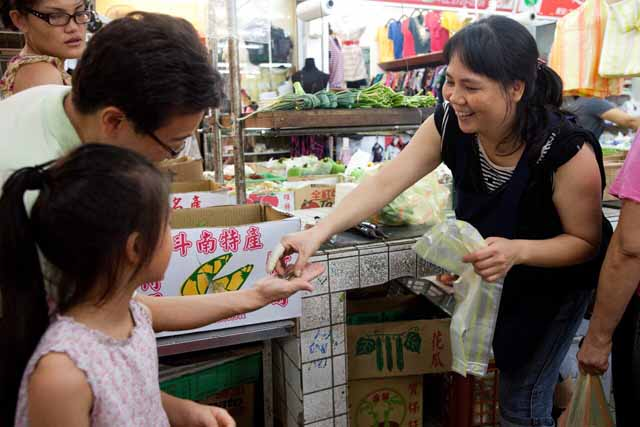
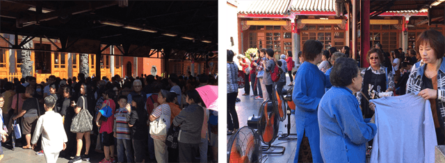
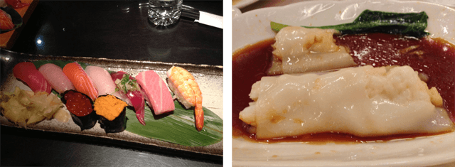
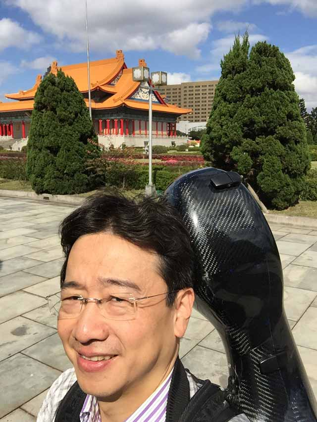

達人的旅遊新觀點


他是台灣最有創意的古典音樂家、也是最知名大提琴家，他是第一個想在太魯閣峽谷音樂會的古典音樂家，他更瘋狂的將音樂會帶到金門翟山坑道，也是第一位受邀在台灣總統府音樂會演奏的音樂家。 他的創意不設限，大提琴可以跟京劇、跟台灣歌仔戲、跟掌中戲合作，可以跟茶、跟咖啡、跟美食結合，可以跟服裝設計、跟現代詩對話，他更刷新了台灣的古典音樂售票紀錄，兩千多座位的台北國家音樂廳可以在20分鐘內售罄，這就是大提琴家--張正傑
台北便是我最愛的小三。 張正傑

雖然在基隆出生，從維也納搬回台灣，轉眼間我也在台北待了26年，見證到台北早期的塞車、空氣品質不佳，到現在捷運的便利與交通的井然有序，台北轉換成為一個最方便居住的都市。更獨特的是，台北處處充滿了活力。
就從國父紀念館開始，讓我帶著大家認識台北吧。
一大早的國父紀念館就展現了無窮的生命力，一群群的台北人，打著太極、跳舞，或者運動，就像葛利格--皮爾金組曲(E.Grieg：Peer Gynt Suite)中的「早晨」一般的充滿朝氣。許多運動的人之後都會到附近【光復市場】買菜，了解一個城市最好的方式，莫過於走入傳統市場。像這種小而美的在地市場，最能讓您貼近在地人的生活。市場內有個「同學菜攤」堪稱一絕，老闆見到買菜的男士，都稱呼同學，當然我就是老闆的同學之一啦！多聲道的老闆見到不同國籍的人還會用不同的語言來打招呼，不知道他是哪學來的印尼話、越南話呢？並且他還不定時會買一些特別的九層塔、羅勒來附贈給買菜的客人。從老闆身上，你可以感受到他對這份工作的欣喜與對蔬菜的愛，也感染到買菜的我，讓我正向、開心的展開每一天。而光復市場旁的素包子店，總是大排長龍，各式口味的素包子滿足了人們的味蕾，常常有人一買就是好幾盒呢。
如果要體驗老台北的氛圍，就可以到延平北路附近的【永樂市場】，雖然最近重新整修過，但是一攤攤的人情味還是依舊。到這裡，也別忘了吃一下附近的雞卷或者是旗魚米粉，那也是多年來不變的老滋味。逛市場時，我腦海裡浮現的卻是小約翰史特勞斯的吉普賽男爵序曲 (J.Strauss：Dear Zieunebaron)，超級搭呢！
認識一個城市另外一個方式，就是去拜訪寺廟，我推薦龍山寺與行天宮。香火鼎盛的龍山寺是二級古蹟，不容錯過，而附近的青草街也別忘了逛逛，如果找不到，跟著你的鼻子走就對了。另一座必訪的廟宇就是行天宮，去年開始為了環保而倡導不燒香，我深感佩服。建議大家親自體驗這種不拿香拜拜的寺廟 (唯一還有持香處則是行天宮有名的「收驚」 )。這就是台北非常特別的地方---她有各種可能性。穆索斯基的展覽會之畫 (M.Mussorgsky：Pictures at an Exhibition)很適合廟宇的場景。
台北當然是美食的重鎮，我推薦四家非常不一樣的餐廳，復興北路的大和日本料理，「特上壽司」物美價廉廣受歡迎；神旺大飯店的潮品集是另外一個選擇，精緻的潮州式飲茶點心，尤其是蝦仁腸粉最獲我女兒的青睞。榮榮園的浙寧菜頗為道地，賓客的平均年齡都很「資深」；亞都飯店的法國菜，以其頂級的服務及菜色為台北餐飲的多樣性下了最佳的註解。
來台北當然要試試最夯的U-bike，但是可別亂騎，我覺得充滿林蔭的仁愛路是最佳體驗之路。而晚上的台北，可以參與的活動琳琅滿目，我推薦您可以到國家音樂廳欣賞音樂會，幾乎全年都有節目任您挑選。廳裡四千多根管子所架構出來的管風琴是全球唯一有著東方外觀的管風琴，現場聽巴赫的d小調管風琴觸技曲 (J.S.Bach: Toccata in d minor BWV565)最能感受到震撼的音效。
欣賞完表演之後，想要放鬆一整天的疲憊？在台北，半個小時內就可以去洗溫泉了。不論是北投或者陽明山，浸泡在溫泉裡，讓身心得以沉澱，也洗去一天的煩囂。如果能同步聽到孟德爾頌「仲夏夜之夢」夜曲，那就是無上的享受了。
台北，值得用視覺、聽覺、嗅覺、味覺、觸覺五感，還有最重要的--「心」，來認識她、品味她。